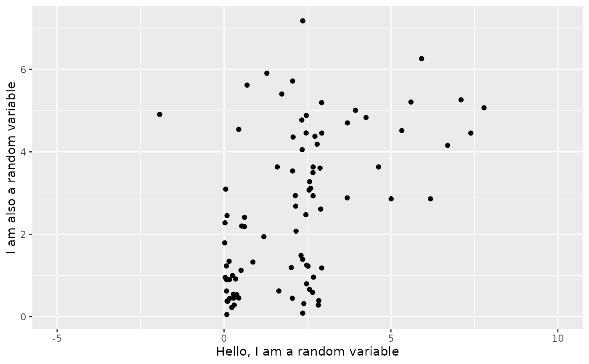

These scales allow for distributions to be passed to the x and y position by mapping distribution objects to continuous aesthetics. These scale can be used similarly to the scale_*_continuous functions, but they do not accept transformations. Since transformations are done before the Stat is applied, transformations applied to distributions are the only kind of transformations that make sense. If you want to transform your scale, you should apply a transformation through the coord_* functions, as they are applied after the stat, so the existing ggplot infastructure can be used. For example, if you would like a log transformation of the x axis, plot + coord_transform(x = "log") would work fine.
Usage
scale_x_distribution(
name = waiver(),
breaks = waiver(),
labels = waiver(),
limits = NULL,
expand = waiver(),
oob = oob_keep,
guide = waiver(),
position = "bottom",
sec.axis = waiver()
)
scale_y_distribution(
name = waiver(),
breaks = waiver(),
labels = waiver(),
limits = NULL,
expand = waiver(),
oob = scales::oob_keep,
guide = waiver(),
position = "left",
sec.axis = waiver()
)Arguments
- name
The name of the scale. Used as the axis or legend title. If
waiver(), the default, the name of the scale is taken from the first mapping used for that aesthetic. IfNULL, the legend title will be omitted.- breaks
One of:
NULLfor no breakswaiver()for the default breaks computed by the transformation objectA numeric vector of positions
A function that takes the limits as input and returns breaks as output (e.g., a function returned by
scales::extended_breaks()). Note that for position scales, limits are provided after scale expansion. Also accepts rlang lambda function notation.
- labels
One of the options below. Please note that when
labelsis a vector, it is highly recommended to also set thebreaksargument as a vector to protect against unintended mismatches.NULLfor no labelswaiver()for the default labels computed by the transformation objectA character vector giving labels (must be same length as
breaks)An expression vector (must be the same length as breaks). See ?plotmath for details.
A function that takes the breaks as input and returns labels as output. Also accepts rlang lambda function notation.
- limits
One of:
NULLto use the default scale rangeA numeric vector of length two providing limits of the scale. Use
NAto refer to the existing minimum or maximumA function that accepts the existing (automatic) limits and returns new limits. Also accepts rlang lambda function notation. Note that setting limits on positional scales will remove data outside of the limits. If the purpose is to zoom, use the limit argument in the coordinate system (see
coord_cartesian()).
- expand
For position scales, a vector of range expansion constants used to add some padding around the data to ensure that they are placed some distance away from the axes. Use the convenience function
expansion()to generate the values for theexpandargument. The defaults are to expand the scale by 5% on each side for continuous variables, and by 0.6 units on each side for discrete variables.- oob
One of:
Function that handles limits outside of the scale limits (out of bounds). Also accepts rlang lambda function notation.
The default (
scales::censor()) replaces out of bounds values withNA.scales::squish()for squishing out of bounds values into range.scales::squish_infinite()for squishing infinite values into range.
- guide
A function used to create a guide or its name. See
guides()for more information.- position
For position scales, The position of the axis.
leftorrightfor y axes,toporbottomfor x axes.- sec.axis
sec_axis()is used to specify a secondary axis.
Examples
library(ggplot2)
library(distributional)
set.seed(1997)
point_data <- data.frame(xvar = c(dist_uniform(2,3),
dist_normal(3,2),
dist_exponential(3)),
yvar = c(dist_gamma(2,1),
dist_sample(x = list(rnorm(100, 5, 1))),
dist_exponential(1)))
ggplot(data = point_data) +
geom_point_sample(aes(x=xvar, y=yvar)) +
scale_x_distribution(name="Hello, I am a random variable", limits = c(-5, 10)) +
scale_y_distribution(name="I am also a random variable")
